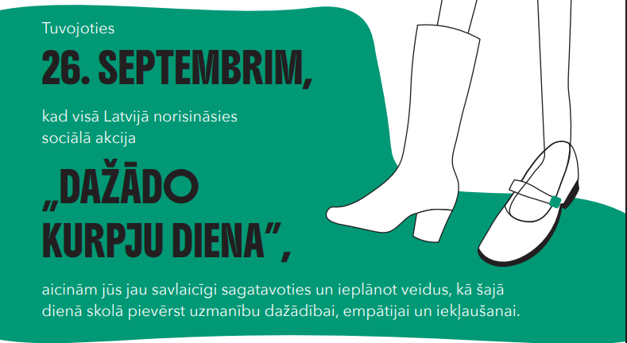

Sociālā akcija “Dažādo kurpju diena” jau šonedēļ – 26. septembrī!

Cienījamie izglītības iestāžu pārstāvji, skolotāji un skolēni!
Jau šo piektdien, 26. septembrī, visā Latvijā atzīmēsim sociālo akciju „Dažādo kurpju diena”!
Šajā dienā ar vienkāršu žestu – uzvelkot katrā kājā atšķirīgu apavu – mēs simboliski „iekāpjam otra kurpēs” un parādām, ka spējam būt empātiski un atvērti dažādībai.
„Dažādo kurpju diena” ir īpaša iespēja apliecināt, ka mūsu sabiedrībā ir vieta ikvienam, un īpaši svarīgi ir, lai šo vēstījumu iedzīvinātu bērni un jaunieši. Ar jūsu – pedagogu – palīdzību mēs varam rosināt jaunajās paaudzēs līdzcietību, pieņemšanu un sapratni.
Lai sagatavošanās būtu vienkāršāka, vēlreiz aicinām iepazīties ar pielikumā sagatavotajiem materiāliem – plakātiem, vizuālajām zīmēm un prezentācijām, kā arī praktiskām idejām sadarbībai ar tuvumā esošajiem sociālo pakalpojumu sniedzējiem.
Ceram, ka 26. septembris jūsu skolā kļūs par krāsainu, iedvesmojošu un sirsnīgu dienu, kur katrs dažādais apavu pāris būs apliecinājums vienotībai un izpratnei.
Ar cieņu
Labklājības ministrija
|
@agenskalna.valsts |
avgdome@gmail.com |
@avgdome |
@agenskalniesi |